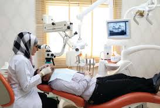
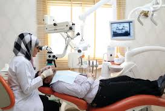

Diseases of dentist
.jpeg) 

- introduction :
- The dental clinic at Salam International Hospital is keen to provide the best possible care for patients and reviewers, in a fun and educational way, where doctors provide most dental care services:
- Dental implants
- Oral and maxillofacial surgery
- plastic surgery
- Artificial teeth
- Teeth whitening
- Orthodontics
- Dental Surgery
- Periodontal disease
- Orthodontist:
- introduction :
Before undergoing orthodontics, the patient should be informed of the steps the doctor will take and his treatment plan, based on the data collected during the first visit (diagnostic) to the patient, during which: taking a print (a stereogram of the patient's teeth), and a photograph of his teeth (For some cases, "cephalometric") to see his teeth and jaws and their condition and their relation to each other.
The doctor will study the data and develop a strategy and treatment plan in stages. During the two weeks the patient is invited to inform him of the treatment plan and its stages and the final cost.
Treatment of the calendar:
-
The tremendous development in the field of dental science from researches, studies and innovations (modern medical revolution), contributed to revolutionizing the treatment of tooth decay.
Temporary Calendar:
-
Temporary assessment can help children grow teeth in order to avoid permanent tooth decay. In the future, the use of a permanent tooth may eliminate the need to resort to a more expensive evaluation later, as the permanent teeth grow in the mouth.
Adult Calendar:
-
The number of people who are interested in improving their overall health is constantly increasing. They eat various vitamins and exercise, even they make tooth decay.
The orthodontic not only beautifies teeth and smile, it improves chewing and helps digest better, healthier, and brighter. .
Children's Calendar:
-
Children do not have to wait until their teeth are complete to get the calendar. Care can be started at an early age, preferably by visiting the doctor every six months.
For children since tooth eruption and immediately detect the possibility of any undesirable changes or problems of teeth.
.png)